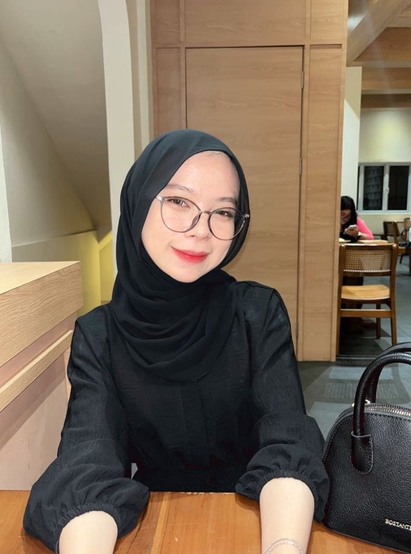
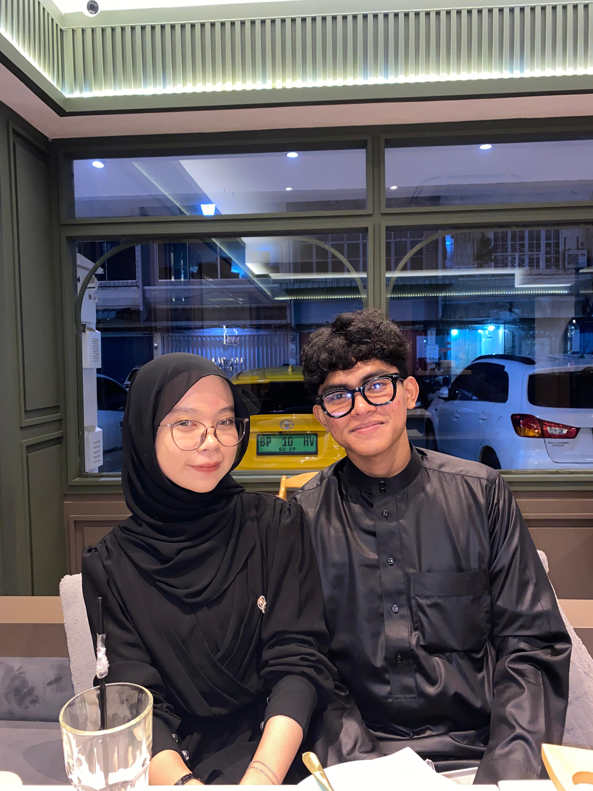

Profile Programmer

Nama:Nesa Novantika
NPM:221510028
Program Studi:Sistem Informasi
Email:nesanvntk04@gmail.com
Deskripsi:
Saya adalah Mahasiswi Sistem Informasi Universitas Putera Batam yang memiliki minat dalam desain UI/UX dan pengembangan web. Saya membuat website ini sebagai tugas proyek akhir UTS mata kuliah Pemrograman Website.
My Favorit
Matcha Roll Cake
Matcha Frappucino
Travelling
Sage Green

Kesayangankuu❤️